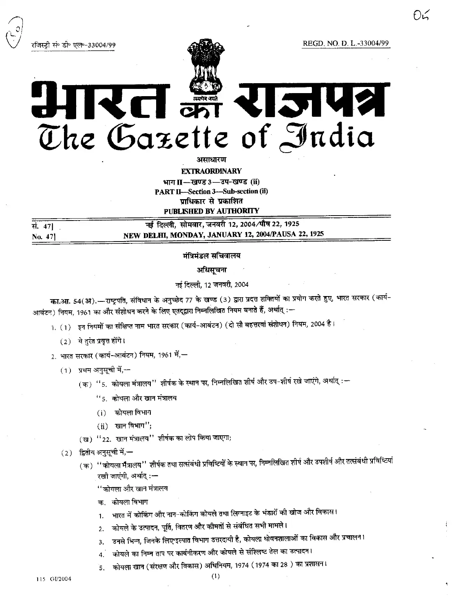
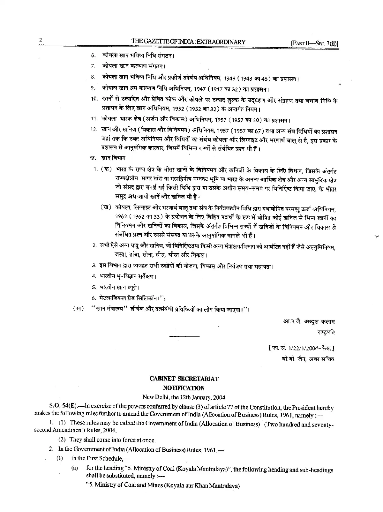
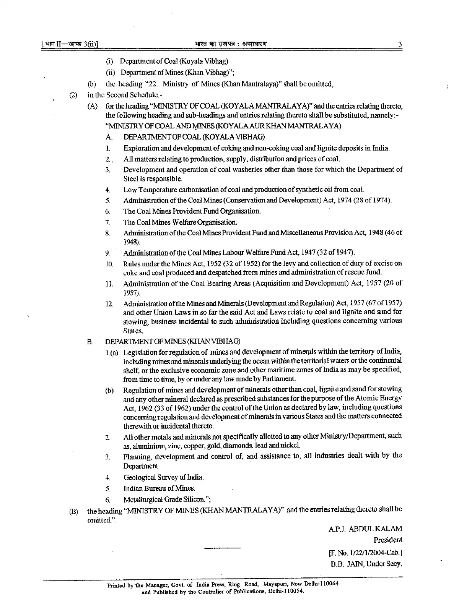

Amendment #272 (S.O. 54(E), 2004)
4 changes: 2 to the First Schedule, 2 to the Second Schedule. 4 applied
What it did to the ministries
- mergedCoal and Mines merge into one ministry. change 1, 2, 3, 4 · histories: Coal, Mines, Coal and Mines
The order, page by page
Page 1 of 3

Page 2 of 3

1Schedule 1 › Ministry of Coal
- 5. Ministry of Coal and Mines
- i. Department of Coal
- ii. Department of Mines
applied at schedule 1 › ministry 5 in the Rules after #272
read page break
Page 3 of 3

234Schedule 1 › Ministry of Mines
applied at schedule 1 › ministry 22 in the Rules after #272
Schedule 2 › MINISTRY OF COAL
- MINISTRY OF COAL AND MINES
- A. DEPARTMENT OF COAL
- 1. Exploration and development of coking and non-coking coal and lignite deposits in India.
- 2. . All matters relating to production, supply, distribution and prices of coal.
- 3. Development and operation of coal washeries other than those for which the Department of Steel is responsible.
- 4. Low Temperature carbonisation of coal and production of synthetic oil from coal.
and 17 more
- 5. Administration of the Coal Mines (Conservation and Development) Act, 1974 (28 of 1974).
- 6. The Coal Mines Provident Fund Organisation.
- 7. The Coal Mines Welfare Organisation.
- 8. Administration of the Coal Mines Provident Fund and Miscellaneous Provision Act, 1948 (46 of 1948).
- 9. Administration of the Coal Mines Labour Welfare Fund Act, 1947 (32 of 1947).
- 10. Rules under the Mines Act, 1952 (32 of 1952) for the levy and collection of duty of excise on coke and coal produced and despatched from mines and administration of rescue fund.
- 11. Administration of the Coal Bearing Areas (Acquisition and Development) Act, 1957 (20 of 1957).
- 12. Administration of the Mines and Minerals (Development and Regulation) Act, 1957 (67 of 1957) and other Union Laws in so far the said Act and Laws relate to coal and lignite and sand for stowing, business incidental to such administration including questions concerning various States.
- B. DEPARTMENT OF MINES
- 1.
- a. Legislation for regulation of mines and development of minerals within the territory of India including mines and minerals underlying the ocean within the territorial waters or the continental shelf, or the exclusive economic zone and other maritime zones of India as may be specified from time to…
- b. Regulation of mines and development of minerals other than coal, lignite and sand for stowing and any other mineral declared as prescribed substances for the purpose of the Atomic Energy Act, 1962 (33 of 1962) under the control of the Union as declared by law, including questions concerning…
- 2. All other metals and minerals not specifically allotted to any other Ministry/Department, such as, aluminium, zinc, copper, gold, diamonds, lead and nickel.
- 3. Planning, development and control of, and assistance to, all industries dealt with by the Department.
- 4. Geological Survey of India.
- 5. Indian Bureau of Mines.
- 6. Metallurgical Grade Silicon.
applied at schedule 2 › ministry MINISTRY OF COAL in the Rules after #272
Schedule 2 › MINISTRY OF MINES
applied at schedule 2 › ministry in the Rules after #272
How this document was read
From the Government of India (Allocation of Business) Rules, 1961 and their amendments, as published by the Cabinet Secretariat (cabsec.gov.in), read by orgpedia. The readings of the older scanned gazettes have known gaps.